Page 1: Room of Requirement - Dumbledore's Army
Filch and Mrs Norris
The Hogwarts caretaker and his constant cat companion
Return to: Hogwarts Great Hall
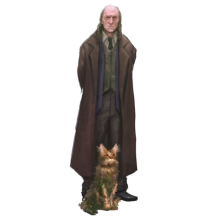
Young Ginny Weasley
A young Gryffindor student and talented Quidditch player
Return to: The Burrow
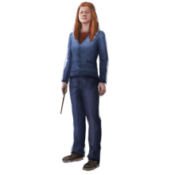
Weasley Fireworks
Weasleys' Wizard Wheezes stocks a variety of magical fireworks in their shop at 93 Diagon Alley. Some varieties have been charmed, including those that multiply every time one attempts to Vanish them or others that explode when struck by a stunning spell.
Return to: Weasleys' Wizard Wheezes
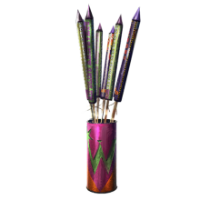
Dumbledore's Army Dueling Dummy
These mechanical Death Eaters were used by Dumbledore's Army as they practiced defending themselves against Dark magic. Following Educational Decree no. 24 by Headmistress Dolores Umbridge banning the existence of student organizations, Dumbledore's Army were forced to meet in secret.
Return to: The Room of Requirement, 1995
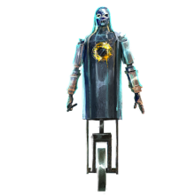
Young Luna Lovegood
Delightfully odd and quirky, Luna Lovegood was an intelligent, perceptive, brutally honest friend to Harry Potter. Daughter of Quibbler founder Xenophilius Lovegood, Luna was a talented duellist, proving her mettle in several battles during the Second Wizarding War.
Return to: Ravenclaw Common Room, 1996
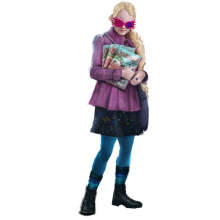
Page 2: Potions Classroom
Professor Snape
Former Hogwarts Headmaster Severus Snape spent his life in unrequited love with Lily Potter. After her death at Voldemort's hand, he swore to Albus Dumbledore that he would protect her son, Harry, in honour of his lost love.
Return to: Hogwarts Potions Classroom
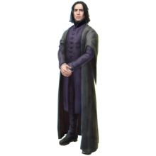
Half-Blood Prince's Copy of Advanced Potion Making
A used copy of Advanced Potion Making, personally annotated by the mysterious Half-Blood Prince. Replete with supplementary information about Potion recipes, the book featured entirely new spells.
Return to: Professor Slughorn's Potions Classroom, 1996
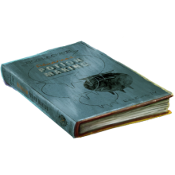
Young Harry Potter
Harry Potter spent his early childhood with his Muggle relatives, the Dursleys. It wasn't until he turned eleven that he discoverd he was actually one of the most famous wizards alive - having survived Lord Voldemort's Killing Curse.
Return to: Forest of Dean, Gloucestershire, 1997
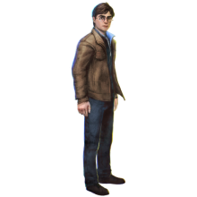
Hedwig
Harry received his owl Hedwig as a birthday gift from Hagrid. She remained his loyal companion throughout his years at Hogwarts, delivering his mail and keeping Harry company when he was sent back to the Dursley's home every summer.
Return to: Hogwarts Owlery
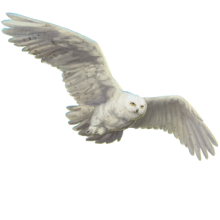
Sirius Black
Sirius Black was best friends with James Potter, and godfather to his son, Harry. He was wrongly convicted for the murder of twelve Muggles and Peter Pettigrew and spent twelve years in Azkaban before he escaped.
Return to: Number 12, Grimmauld Place, 1995
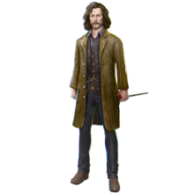
Page 3: Chess Chamber
Wizard Chess Queen
Wizard Chess is an enchanted form of Muggle chess, except the game pieces move on their own and attack the opposing player's pieces when capturing. Pieces may offer advice to players they don't trust.
Return to: Hogwarts Chess Chamber
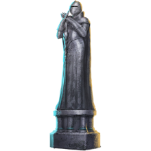
Flying Key
Professor Filius Flitwick enchanted a flock of winged, flying keys, as a means of protecting the Philosopher's Stone. By obscuring which key was the “right” one, he hoped to discourage potential thieves.
Return to: Hogwarts Charms Classroom
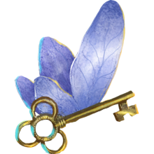
Albus Dumbledore
Former Hogwarts Headmaster Albus Dumbledore was one of the most accomplished wizards of his time, serving as Harry Potter's mentor during Harry's time in school. Dumbledore was a beloved educator, impacting generations of young witches and wizards with his wisdom and guidance.
Return to: Hogwarts Headmaster's Office, 1994
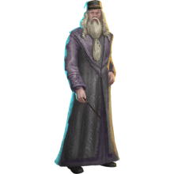
Young Hermione Granger
Born to a pair of Muggle dentists, Hermione Granger was a highly accomplished witch during her time at Hogwarts. She excelled in nearly every subject and mastered magic and Potions that were considered too advanced for someone her age.
Return to: Forest of Dean, Gloucestershire, 1997
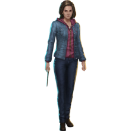
Young Ron Weasley
The youngest boy of the Weasley family, Ron befriended Harry Potter in their first year at Hogwarts. Ron helped Harry throughout his ordeal against Lord Voldemort, eventually acquitting himself well in the Battle of Hogwarts.
Return to: Forest of Dean, Gloucestershire, 1997
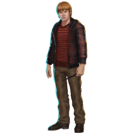